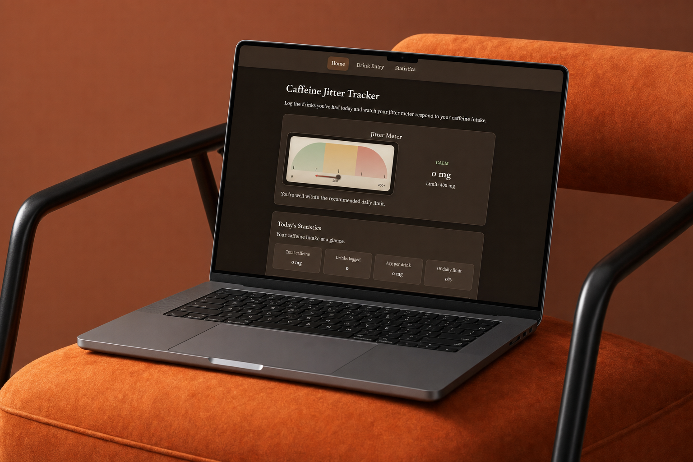

App Design
Caffeine Jitter Tracker
Caffeine Jitter Tracker is a project designed to make sense of coffee habits during a busy semester. The app turns quick logs into a visual daily summary so users can spot overconsumption early.
- Client
- ARTGR 4840/5840
- Role
- Designer, Developer
- Tools
- Cursor · Netlify

Caffeine Jitter Tracker is a project designed to make sense of coffee habits during a busy semester. The app turns quick logs into a visual daily summary so users can spot overconsumption early.
Challenge
Caffeine tracking tools often feel clinical or guilt-driven. The goal was a friendly interface that encourages awareness without shame — fast logging with meaningful feedback.
Process
Define
Mapped user flows/tasks, descriptive web structure, and site map.
Prototyping
Created a usable prototype using Cursor. App hosting was done with Netlify.
Defining the Project
Descriptive web structure, user flows/tasks, and site map.
1 / 4
Mockups
1 / 3
Deployment
The prototype was built with Cursor. Deployed using Netlify.
Visit the website